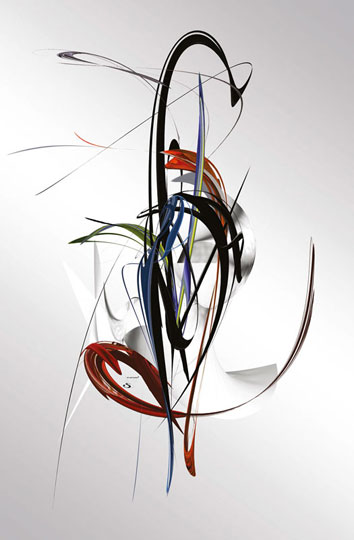

Christina Seibold
Hope
 |
|
|
|
(1 of 10) |
 |
|
|
|
(1 of 10) |
"Building bridges, making new perspectives possible..."Born on 30 March 1966 in Frankfurt am Main, Germany, the graphic artist Christina Seibold understands the pieces around her in close relation to her own emotions and synaesthetic perceptions as the core around which she weaves spherical worlds of experience and condenses them into lively, many-facetted art prints. The eye can wander and always discover something new.
"With a close relationship to her own emotions and inspiring music, lively, many-faceted digital graphics are created that allow the eye to wander and continually discover something new. Christina Seibold presents inner realities in her pictures that move her and express themselves in a new way within her.
"Time and again, these works created with emotional power reveal 'quotes' from a concrete world of forms that Christina Seibold dissolves and changes in an extraordinarily subtle way. Such discernible contours and forms open up to the observers eye as he or she becomes immersed in the depths of these energetic works. Then they disclose a fantastic inner world in which dynamic forces are at work.
"A look at the art prints divulges their spontaneity and emotionality, as well as their inwardly directed contemplation or the vivid design of deep, ardent worlds of feelings. As a dynamic counteracting force, the exciting sweeps that the graphic artist blends into her works frequently have an effect in the exhibits.
"For Christina Seibold, letting her graphics assume their form is a means for depicting the visual poetry that succeeds in lending soul to spaces. These fascinate the viewer in their density and abundance of expression but never make an overpowering impression.
"Participation in exhibitions with national and international participation. Solo exhibits: Frankfurt/Main, Kunst in der Kanzlei SBS, Dortmund, Schmuckwelten - Designwelten, Pforzheim, Kunstlege Hohenegg (Allgäu), Leipzig, Siegen, Göppingen, Northeim, Kunstforum Salzburg (Austria), Grenzenlos Feldkirch (Österreich)."